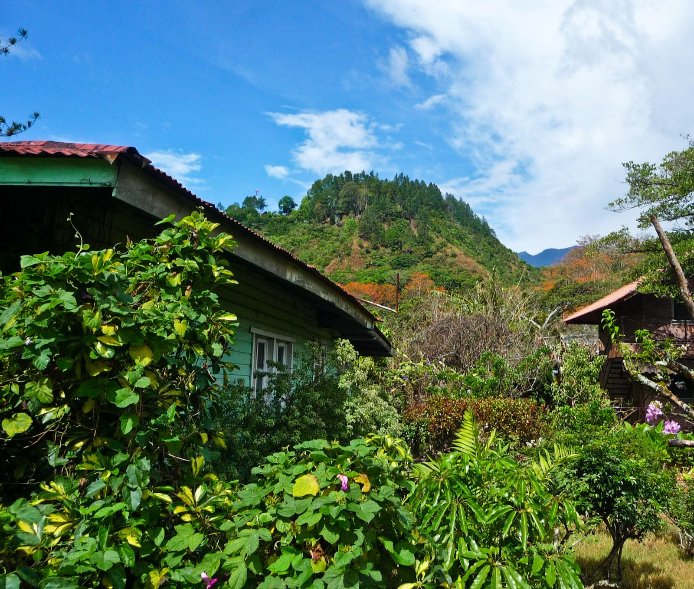
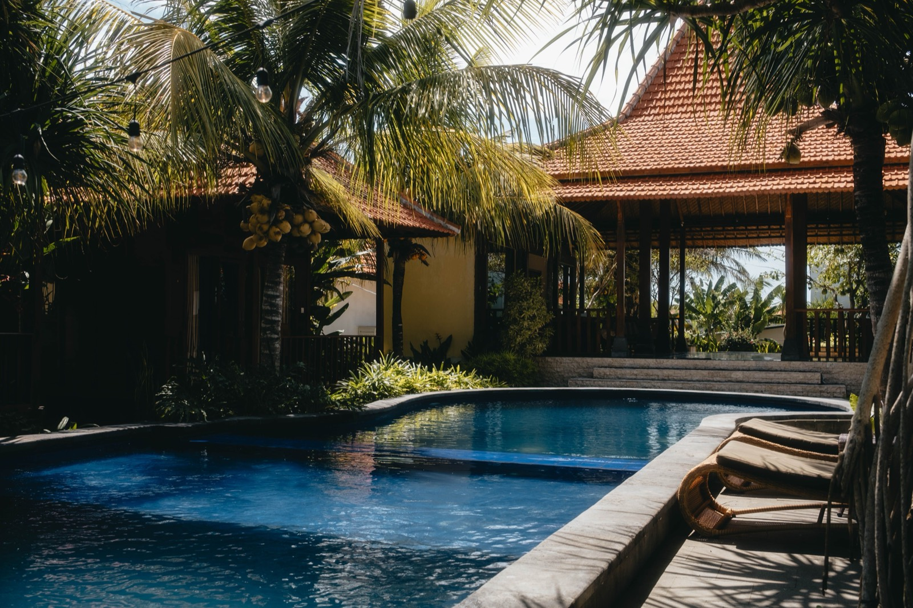
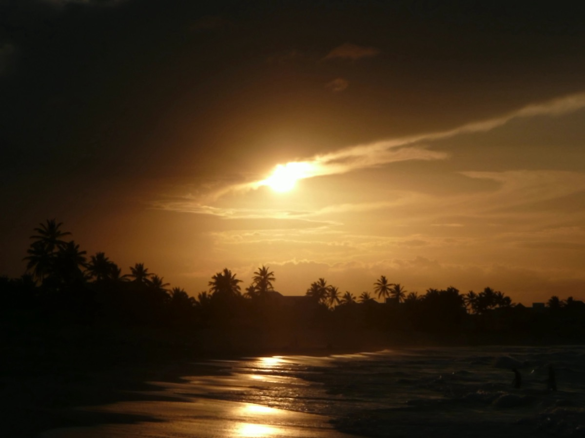
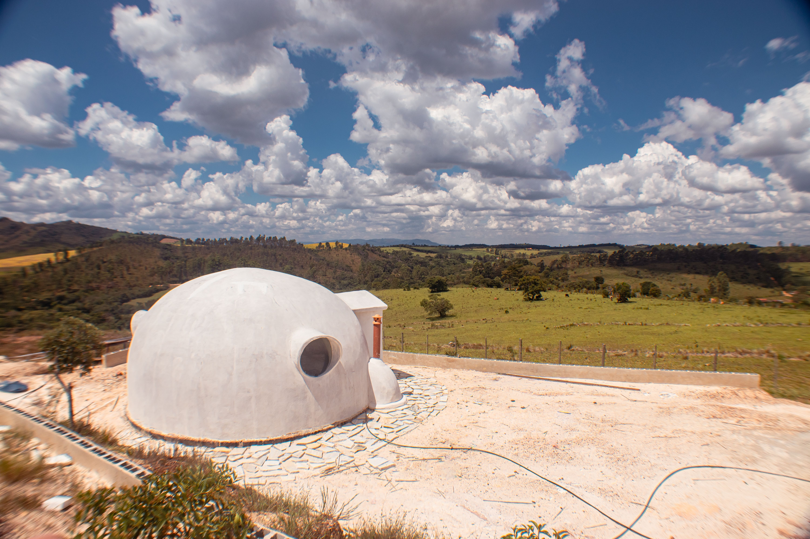
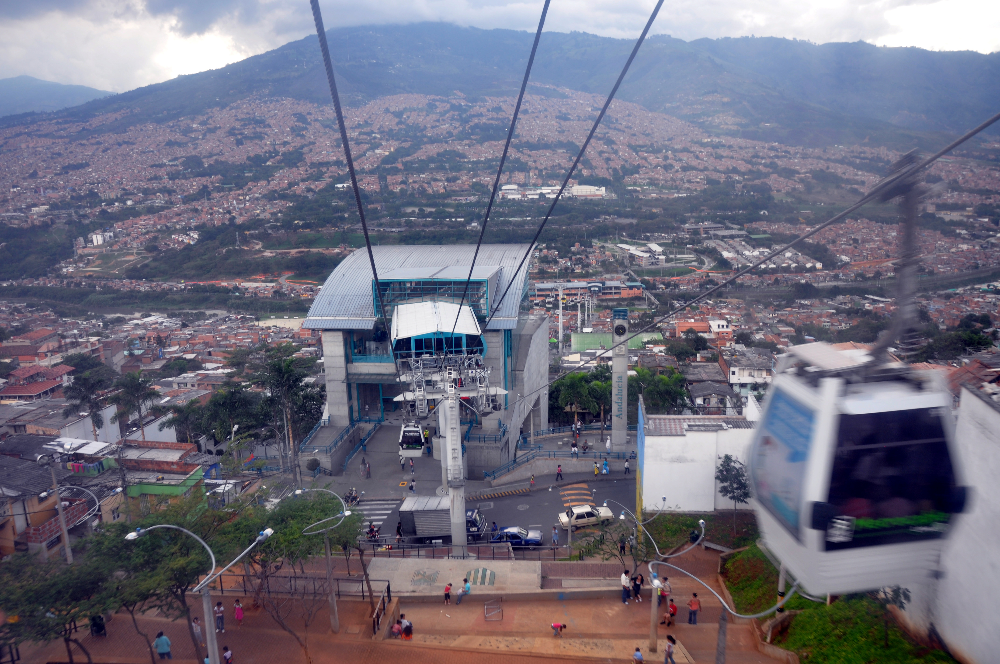

Complete Guides
Deep, illustrated guides to relocating, buying, and building in the tropics — where to live, how to build, what it costs, and the legal path to keys in hand. Written by builders, backed by real data.

Boquete Real Estate
What property actually costs in Boquete in 2026, broken down by neighbourhood, plus titled land versus Rights of Possession, what a foreigner may own, and why the listing portals mislead in this market.

Retire in Panama
Real 2026 budgets, six towns compared honestly, the full pensionado discount schedule, and the health insurance age wall at 75 that decides your timing more than any visa does.

Panama Residency Requirements
Every route with current thresholds, what disqualifies people, the five year path to citizenship, and the 15 October 2026 deadline that raises the investor minimum by $200,000.

Panama vs Costa Rica
Two countries that look interchangeable in the brochures and are not. Currency, healthcare age limits, residency speed, real budgets and tax compared on 2026 numbers, with an answer at the end.

Moving to Panama
The complete, honest guide to relocating to Panama — real cost of living, how safe it is, the Friendly Nations and Pensionado visas, healthcare, and where expats actually choose to live.

Moving to Costa Rica
Pura vida, honestly assessed — the real cost of living (higher than people expect), safety, residency routes, universal healthcare, and where the expat life works best.

Moving to Medellín
The City of Eternal Spring — a genuinely low cost of living, the real safety picture in 2026, visa options, world-class cheap healthcare, and the best neighborhoods for expats.

Boquete
A mountain town at the foot of an 11,401-foot volcano: the birthplace of Geisha coffee, one of the largest expat communities in Central America, and a clear path from land to legal residency.

San Isidro & the Valley of El General
A real Costa Rican city in a fertile mountain valley, a fraction of the land cost of the coasts, forty minutes from whale watching, and an hour from a cloud forest full of quetzals.

Moving to the Caribbean
Cost of living, residency and citizenship routes, safety, and healthcare for every inhabited Caribbean island — ranked by real search demand and sorted by how you're legally allowed to stay.

Alternative Building Methods
From 3D-printed concrete and ICF to bamboo, shipping containers, and earthbag domes — every building method that makes sense (or doesn't) in the tropics, with real 2026 costs and honest trade-offs.
Roofing for Tropical Homes
Metal, tile, tin, concrete, or shingles? Every roof type compared for hot, wet, and hurricane climates — real costs, lifespans, and what actually survives the tropics.

Geodesic Dome Homes
What a dome home really costs in 2026, DIY vs kit, the leak and financing truth, storm-proof monolithic domes, and whether a dome is actually worth building. The honest builder's take, not the sales pitch.

Cities of Eternal Spring
The Latin American cities where it stays 60 to 80°F every month of the year: Medellin, Cuernavaca, Boquete, Antigua, Quito, Cuenca, Cochabamba and Costa Rica's valley, plus the simple science of why.